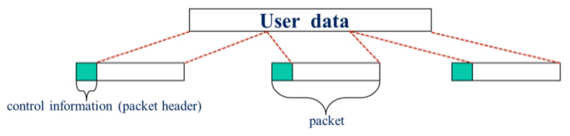

충남대학교 컴퓨터공학과 김상하 교수님의 "컴퓨터 네트워크" 강의를 필기한 내용입니다.
다소 잘못된 내용과 구어적 표현 이 포함되어 있을 수 있습니다.
IP
- 일단 IP는 Network Layer의 한 종류인데
- 이것 말고도 다른 것들도 있었지만 결과적으로 IP가 승리를 거두었고 앞으로도 계속 쓰이게 될 것이다
- Network Layer로 IP를 사용하는 통신망에 연결되어 있으면 인터넷에 연결되어 있다고 하더라
- 그리고 컴퓨터같은 송수신지 말고 중간에 거쳐가는 Intermediate Node같은 경우에는 Network Layer까지만 있고 그 상위 프로토콜에 대한 기능은 가지고 있지 않더라 - 까지도 데통시간에 배웠쥬?
Packet Switching
- 뭐 옛날에는 Circuit switching이라는 기술도 있었지만 지금은 거의 안쓴댄다
Principles of Packet Switching

- 일단 송신하려고 하는 user data를 패킷단위로 쪼개고 각 패킷에 packet header라는 control information을 붙인다.
- packet header에는 송수신지의 Network address(IP address)와 다른 여러 정보들이 들어가게 된다
- 그리고 Packet Switching이라는 것은 큐에 있는 패킷을 바꿔치기 하는 것을 의미한다
- 이러한 작업을 하는 장비를 Router라고 하며 Packet Switch라는 말과 동일하게 쓰인다
- 근데 갑자기 뭔 큐냐
- 위 그림의 왼쪽은 전체 네트워크 구조의 예시이고 오른쪽은 저 네트워크 안에서 2번 라우터의 구조를 나타낸 것이다 - 보면 C, 3, 5, 1과 연결되어 있는 것을 알 수 있다
- 그리고 각각의 노드마다 입출력 회선이 존재한다 - 그림에서는 선 하나로 표현됐지만 사실 두개인 것이다
- 또한 각각의 회선의 끝에는 큐가 존재한다 - 입력 회선의 경우에는 Input queue가 존재해 들어오는 패킷들이 쌓이고, 출력 회선의 경우에는 output queue가 존재해 나가야 되는 패킷들이 쌓이게 된다
- 오른쪽 그림을 통해 Packet switching의 과정을 보면
- 1번 노드와 연결된 회선으로 송신지 B, 수신지 D인 패킷이 들어온다
- 그럼 그 패킷이 그 회선의 input queue에 쌓인다
- queue에서 나오면, 2번 노드가 보고 수신지가 D인 것을 확인한 후 3번 노드로 나가는 output queue에 넣어주게 된다
- Output queue에서 기다리다 3번 노드로 나가게 된다
Two types of packet switching
- Datagram방식 : Connectionless한 방식
- Virtual-circuit방식 : Connect-oriented방식 - Orderly Delivery(connection / disconnection 프로세스를 필요로함)
- 뭔 개소린지 이제 배운다
Datagram
- Datagram방식은 패킷화하여 분리된 패킷들이 같은 경로로 가든 다른 경로로 가든 상관 없는 방식이다
- 위의 예시를 보면
- 일단 datagram방식이나 virtual circuit이나 패킷으로 나누는건 동일하다
- 그리고 나눈 패킷 중
- 첫번째 패킷은 B → 1 → 4 → 5 → 3 → D의 경로로 갔고
- 두번째 패킷은 B → 1 → 2 → 5 → 3 → D의 경로로 가고
- 세번째 패킷은 B → 1 → 2 → 3 → D의 경로로 갔다고 해보자
- 이 경로를 설정하는 것은 각각 노드 맘대로 하는거다 - 한쪽이 트래픽이 몰려서 다른길로 보낼 수도 있고 뭐 지꼴리는대로 판단해서 보내는 것
- Datagram방식은 이처럼 가는 경로가 일정하지 않고, 따라서 D에 도착하는 순서도 출발한 순서가 아닐 수도 있다 - 따라서 Orderly delivery를 지원하지 않게 되는 것
- 현재 IP망만 Datagram방식을 사용해 통신하고 있고, 전화망같은 다른 망의 경우에는 뒤이어 설명하는 Virtual Circuit방식을 사용한다 - 생각해보면 당연한일 - 전화의 경우 순서가 중요한데 순서가 바뀔 수 있는 Datagram으로 보내는 것은 이상하제
Virtual Circuit
- Virtual Circuit의 경우에는 패킷화해서 분리된 패킷들이 항상 같은 경로를 따라 가게 되는 방식이다
- 그리고 이를 위해 Connect / Disconnect과정이 들어간다
- Virtual circuit의 작동방식은 다음과 같다
1. Connect Phase
- 일단 위와 같은 망에서 B → D로 보낸다고 하자
- 그럼 패킷들을 보내기 앞서 다음과 같은 구조의 컨트롤 패킷을 B가 먼저 보낸다
- 보면 일단 Connect packet인 것을 나타내기 위한 정보와 함께 Virtual circuit number, 송수신지 주소가 들어간다
- Virtual circuit number는 예시 보다 보면 왜필요한지 딱알게 된다 - 약간 통신 id같은 느낌임
- Connect phase가 끝나고 나면 다음과 같은 구조가 되는데 어떻게 이래되는지 보자
- 일단 B가 1번으로 보내는게 좋겠다고 판단해 connect packet을 보내며 자신의 virtual circuit table에 행을 하나 추가한다 - virtual circuit number는 자기가 보낸 virtual circuit number인 0, 송신지는 자신이니까 적을 필요 없고 수신지는 1번 노드 - virtual circuit table은 현재 진행되고 있는 virtual circuit 정보를 저장하는 테이블
- 그리고 1번 노드가 이걸 받고 2번으로 보내는게 좋겠다고 판단하면 2번으로 connect packet을 전달하며 자신의 virtual circuit table에도 행을 하나 추가한다 - virtual circuit number는 받은 connect packet에 담긴 번호인 0, 송신지는 B, 수신지는 2번
- 마찬가지로 2번 노드도 connect packet을 전달받고 3번 노드로 보내는게 좋겠다고 판단한 경우 3번으로 전달하며 자신의 virtual circuit table에도 행을 하나 추가한다 - virtual circuit number는 받은 connect packet에 담긴 번호인 0, 송신지는 1, 수신지는 3
- 3번 노드에서도 동일한 과정을 거치고 D가 받은 다음에도 동일하게 virtual circuit 0에 대한 정보를 자신의 virtual circuit table에 넣는다
- 이렇게 각 노드마다 virtual circuit table에 행이 하나씩 들어가게 되면 Connect phase가 끝이난다
2. Data Transfer Phase
- Connect phase 가 끝나고 나서 이제 B가 위의 그림과 같은 패킷들을 전송한다 - 여기서 중요한 점은 패킷의 헤더에 송수신지 주소가 들어가는게 아니고 virtual circuit number랑 몇번째 패킷인지의 정보가 들어가게 된다는 것이다
- 왜냐하면 virtual circuit number가 0인 통신에 대한 경로가 다 각각 노드의 virtual circuit table에 들어가 있기 때문에 virtual circuit number만 보내도 경로를 따라갈 수 있기 때문
- B가 virtual circuit table을 보고 1번으로 보내야겠다는것을 알아낸 뒤, 1번 노드로 패킷을 보낸다
- 그럼 1번노드는 패킷을 받아들고 virtual circuit table에 가서 확인한다 - virtual circuit number가 0이고 송신지가 B이므로 2번으로 보내야 된다는 것을 알아내게 됨 - 따라서 1번 노드는 패킷을 2번노드로 보내게 된다
- 2번 노드도 마찬가지로 패킷을 받은 뒤 virtual circuit table에 가서 어디로 보내야되는지 찾는다 - virtual circuit number가 0번이고 송신지가 1번이므로 3번으로 보내야 되는 것을 알아냄 - 따라서 2번 노드는 3번노드로 보내게 된다
- 3번 노드도 동일한 과정을 거치게 되고 결과적으로 모든 패킷이 같은 경로를 따라 D번 노드에 도착하게 된다
3. Disconnect Phase
- 통신이 끝난 뒤에 각각 노드의 virtual circuit table에 해당 행을 지워 저장공간을 확보해야 된다 - 하지만 각각 노드는 통신이 끝났는지 모르기 때문에 Disconnect Phase가 진행되게 되는 것
- 통신이 끝난 뒤에 B는 위와 같은 Disconnect packet을 전송하게 된다 - virtual circuit table을 보고 1번으로 보내야 한다는 것을 알아낸 뒤 1번으로 보내고 자신의 virtual circuit table에서 해당 행을 지운다
- Disconnect packet을 받아든 1번 노드는 virtual circuit number가 0번이고 송신지가 B인 행을 찾은 뒤 2번으로 보내야 된다는 것을 알아낸다 - 이후 2번으로 보내고 자신의 virtual circuit table에서 해당 행을 지운다
- 2번과 3번, D에서도 동일한 과정을 거치게 되고 결과적으로 모든 노드에서 이번 통신에 대한 virtual circuit 정보가 지워지게 된다
- Virtual Circuit방식은 패킷들이 항상 같은 경로를 따라가기 때문에 복잡하긴하지만 송신순서와 동일한 순서로 수신되게 된다 - Orderly Delivery를 지원한다
- 옛날에는 순서대로 가는 것이 당연하다 생각했기 때문에 역사가 오래된 방식이며 IP를 제외한 대부분의 통신이 이 방식을 사용하게 된다
Example code
- Packet은 종착역에 도착할때까지 변하지 않지만 Frame의 물리주소는 계속 바뀌게 된다
- 위와 같은 구조를 대강 코드로 짜보면 아래와 같다 - 다만 위의 그림에서는 Frame의 색깔이 전부 동일하게 표현되었지만 위에서 말한거처럼 Frame의 내용은 매번 달라진다 - Packet이 동일하게 유지되는거고 Frame은 물리주소가 계속 바뀌기 때문에 달라짐
- 일단 이건 packet과 frame의 자료구조
- 이건 Sender의 코드
- 이건 1~4번 노드의 코드 - Intermediate node의 경우에는 Network layer까지밖에 없기 때문에 main()함수가 Network layer의 역할을 하고 있다
- 이건 Receiver의 코드
- 위의 코드들은 걍 한 읽어보면 뭐 어떻게 작동하는지 알 수 있을것이다
- 여기서 중요한건 일단
- Transparency가 잘 지켜져야 된다는 것이다 - 보면 Network layer에서만 packet_type이 등장하고 다른 layer에서는 등장하지 않음 - 마찬가지로 Data link layer에서만 frame_type이 등장하고 다른 layer에서는 등장하지 않는다
- Sender의 경우에 main()에서 Packet을 생성하여 send_data()를 호출할 수도 있지만 그렇게 하지 않고 주소와 데이터를 전달해 send_data()에서 packet을 생성하는 이유가 이러한 이유에서인 것
- 이렇게 하는 이유는 만약에 Packet의 구조가 달라졌을 때 network계층만 손보면 되기 때문 - 그 상위계층에서 Packet을 만들어 전달하는 구조였다면 Packet의 구조가 바뀌게 되었을 때 상위계층의 구현도 바꿔줘야 하는 문제점이 발생하게 된다
- 하지만 Transparency라는 것이 모든걸 다 숨긴다는 것이 아니다 - 각 계층의 자료구조를 숨긴다는 것이고 위의 예제에서 보는것처럼 각 계층에서 사용하는 주소의 경우에는 상위 계층에서도 사용할 수 있다
- 또한 항상 상위계층에서 하위계층의 함수를 호출하는 방식으로 구현된다는 점이다
- 일단 sender의 경우에는 상위 계층에서 하위계층으로 전달하는 방식이기 때문에 이와 같은 구조가 이상하지 않음
- 하지만 receiver의 경우에는 하위계층에서 상위계층으로 전달하는 방식이지만 함수호출은 상위계층에서 하위계층으로 이루어지게 된다
- 왜냐면 상위계층에서 하위계층의 함수를 호출하고, 하위계층에서는 패킷 / 프레임이 도착할때까지 기다렸다가 도착하면 처리한 다음에 return하거나 주소를 참조하는 방식으로 상위계층에 전달하는 구조이기 때문
- main()함수에는 항상 최상위 계층의 코드가 들어가게 되는 것이 이러한 이유에서이다